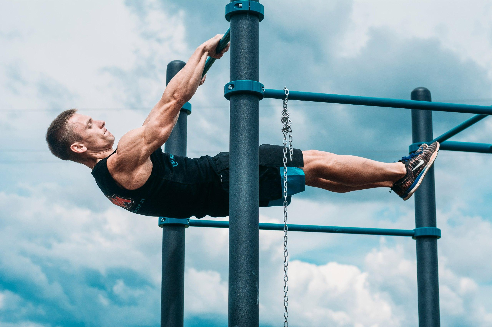
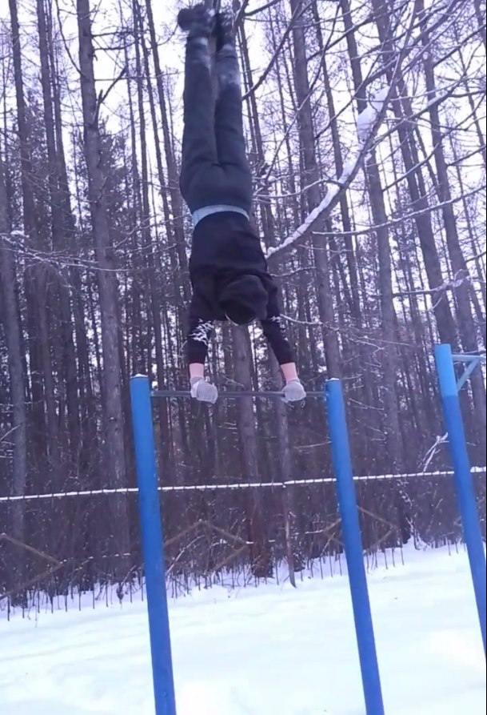
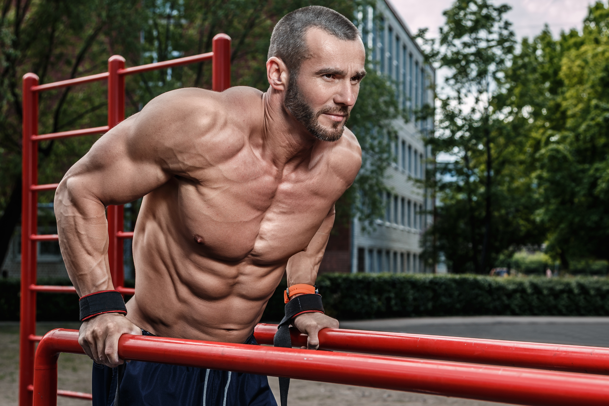

 Ворка́ут (англ. Workout [ˈwəːkaʊt] «тренировка») — это уличная гимнастика, которая может быть отнесена к любительскому виду спорта, физической культуре (фитнесу) и представляет собой спортивную субкультуру. Включает в себя выполнение различных упражнений на уличных спортплощадках, а именно на турниках, брусьях, шведских стенках, рукоходах и прочих конструкциях, или вообще без их использования (на земле). Основной акцент делается на работу с собственным весом и развитие силы и выносливости. Люди, увлекающиеся таким спортом, называют себя по-разному: воркаутеры,турникмены и т.д. Турники и брусья начали активно устанавливаться во дворах и пришкольных территориях ещё во времена СССР, главным образом, в целях распространения физкультурных занятий среди молодёжи и тем самым способствованию здоровому образу жизни и физическому развитию. С этой же целью были введены нормативы ГТО, в которые также входили подтягивания на турнике и подъём из виса в упор переворотом или силой. Уже тогда многие ребята начали интересоваться и активно заниматься на спортивных площадках. Появлялись даже организованные сообщества по занятию культуризмом, например люберы. В 2000-е с развитием интернета на сайте, предоставляющем услуги видеохостинга, начали появляться любительские видеоролики с тренировками на улице (англ. street workout) в США и в гетто (англ. ghetto workout). Некоторые ролики вызвали большой интерес у молодёжи по всему миру и подобные ролики стали снимать в других странах, используя в названиях те же слова.
 Со временем данное увлечение стало приобретать форму молодёжного движения в странах постсоветского пространства, например в России, Казахстане, Белоруссии и на Украине. На это увлечение молодёжи обратили внимание и власти многих городов, как по просьбам общественности, так и в рамках государственных программ (например «Здоровая нация - здоровая Россия»). Началось активное строительство специальных площадок со всеми необходимыми спортивными снарядами для занятий уличной гимнастикой. Впоследствии, например в России, появились региональные федерации по данному виду любительского спорта. В конце 2015 года начальник Управления физической подготовки Вооружённых сил РФ полковник Станислав Боцман сообщил, что некоторые элементы уличной гимнастики могут быть внедрены в программу физической подготовки российских военных в 2016 году. Большую популярность данный любительский вид спорта приобретает и в других странах.Так, например, в Польше открывается всё больше специально оборудованных площадок, устраиваются тренировки для всех желающих. Новые спортивные площадки открываются в Португалии. В 2014 году первые группы заинтересованных в развитии данного спорта, в том числе из числа русских немцев, появились в Германии, а уже в 2015 году там стали появляться специальные площадки. В том же 2015 году всё активнее начали строить площадки во Франции. Группе из Палестины добиться установки площадки пока не удалось, поэтому они её обустроили своими силами. В Турции первая площадка появилась в январе 2016 года. Большую популярность данный любительский вид спорта приобретает и в других странах. Так, например, в Польше открывается всё больше специально оборудованных площадок, устраиваются тренировки для всех желающих. Новые спортивные площадки открываются в Португалии. В 2014 году первые группы заинтересованных в развитии данного спорта, в том числе из числа русских немцев, появились в Германии, а уже в 2015 году там стали появляться специальные площадки. В том же 2015 году всё активнее начали строить площадки во Франции. Группе из Палестины добиться установки площадки пока не удалось, поэтому они её обустроили своими силами. В Турции первая площадка появилась в январе 2016 года.
 Подтягивания на перекладине — силовое упражнение на повторение; при качественном исполнении подбородок необходимо поднимать выше перекладины, при опускании корпуса вниз — полностью разгибать руки в локтях, не допускать маховые и рывковые движения корпуса. В качестве усложнения могут выполняться подтягивания разными хватами (верхним, нижним, широким, узким, скрестным), подтягивания за голову, на одной руке, с поочерёдной переменой рук, с имитацией походки (робостайл), с утяжелителями, горизонтальные подтягивания (или «печатная машинка», выполняются горизонтальные движения корпуса влево и вправо (вперёд-назад) при положении подбородка выше перекладины, руки необходимо стараться полностью разгибать в локтях), подтягивания в переднем висе (см. ниже) и так далее. Выходы на две руки на перекладине — также силовое упражнение на повторение; для качественного исполнения необходимо при поднятии корпуса вверх над перекладиной и опускании полностью разгибать руки в локтях, избегать маховых и рывковых движений. Отжимания от земли / пола — упражнение на повторение: принимается упор лёжа на полу; после, согнув руки в локтях, опускается тело до параллели с полом; затем, полностью разогнув руки, возвращается тело в исходное положение. Существуют разновидности и усложнения с разными вариантами расположения рук (по ширине), опоры рук (ладонь, кулак, пальцы и так далее), высоты опоры (например «отжимания Ганнибала», которые выполняются как обычные отжимания, но руки кладутся на возвышение примерно 30—70 см, в этом случае можно опускать тело ниже передней опоры; в другом случае на возвышение кладутся ноги). Отжимания на брусьях — для качественного исполнения необходимо избегать маховых и рывковых движений корпуса, при поднятии вверх — полностью разгибать руки в локтях, а при опускании — сгибать руки в локтях до 90 градусов, или менее, корпус должен подниматься и опускаться в вертикальном положении, без наклона туловища вперёд. Значительно более сложные упражнения — отжимания на брусьях в горизонте (при выполнении необходимо контролировать положение корпуса строго в горизонтальном положении) и в стойке на руках (при выполнении стараться держать тело прямым, без завалов вперёд или назад, руки перпендикулярны земле). Передний вис — также может выполняться как статическое упражнение, с задержкой корпуса тела в горизонтальном положении относительно земли на время, при удержании руками за перекладину турника (перекладина спереди от спортсмена); или как упражнение на повторение с поднятиями корпуса до горизонта. Может быть усложнён исполнением, удерживаясь только одной рукой за перекладину, удерживаясь на пальцах, совершая боковые повороты в висе и так далее. Существуют также дополнительные упражнения для укрепления отдельных мышц. Для развития пресса, например, используются упражнения на повторения: с опусканием и подниманием ног (в некоторых случаях — совершая скручивания), или подниманием и опусканием корпуса (само тело при этом удерживается с помощью ног, например за брусья). В большинстве упражнений используется в качестве нагрузки только вес спортсмена (калистеника), однако в некоторых случаях применяются различные утяжелители (в качестве утяжелителя также может выступать партнёр).
Главная страница
Армреслинг
Воркаут
Баскетбол